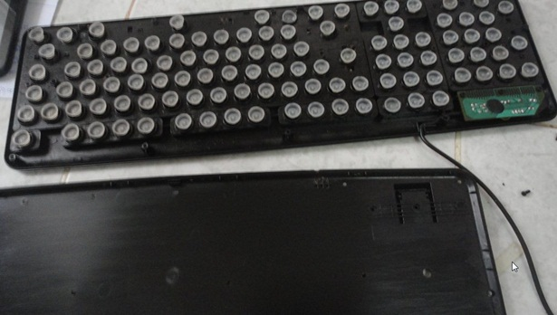
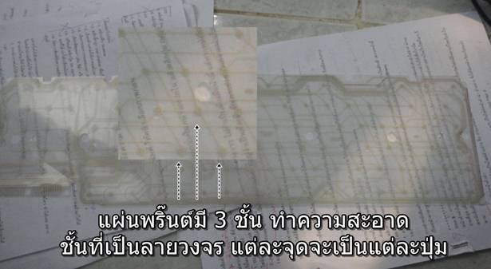
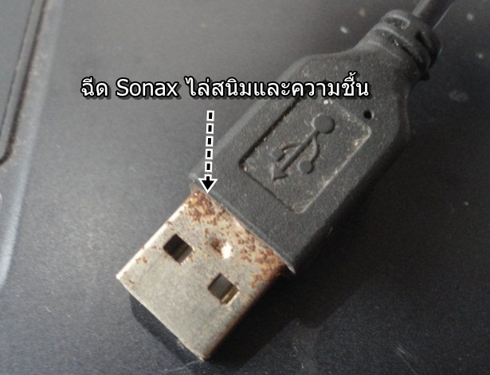

วิธีซ่อมคีย์บอร์ดคอมพิวเตอร์สามารถทำเองได้ เมื่อมีปัญหาในการใช้งาน เช่น กดปุ่มใดๆ แล้วค้าง หรือบางปุ่มใช้ไม่ได้ ปัญหาหลัก จะเกิดจากฝุ่นและความชื้นบางครั้งถูกน้ำโดยตรง อย่างของผู้เขียนถูกแช่น้ำ แมวฉี่ใส่ ละอองฝน ก็ต้องลองซ่อมกันหน่อย
คีย์บอร์ดที่ควรซ่อมในลักษณะนี้ ควรเป็นคีย์บอร์ที่มีโอกาสเสีย หรือไม่น่าจะซ่อมได้ และต้องทำใจว่าอาจจะไม่สำเร็จ ดังนั้นโปรดใช้ วิจารณญาณก่อนตัดสินใจทำตามบทความนี้
ตัวอย่างการซ่อมคีย์บอร์ดคอมพิวเตอร์ด้วยตนเอง
1. เริ่มจากการถอดสกรูด้านหลังออกให้หมด เฉพาะตำแหน่งใต้แผงวงจรเท่านั้นที่จะใช้สกรูยาวกว่าตำแหน่งอื่น
.jpg)
2. ถอดสกรูออกหมดแล้ว ให้คว่ำคีย์บอร์ดกับพื้นเรียบๆ แล้วแกะฝาหลังออก ระวังปุ่มกดพลาสติหลุดจากเบ้า ต้องใช้ความระมัดระวัง ไม่เช่นนั้นจะเสียเวลาจับใส่ที่เดิม ร้อยกว่าอัน ไม่ใช่น้อยๆ เหมือนกันนะ

3. จะพบแผ่นพลาสติกเป็นลายพริ๊นต์แผงวงจร ตัวนี้แหละที่เป็นปัญหา ให้นำไปทำความสะอาด ซึ่งมี 3 ชั้นด้วยกัน ทำความสะอาด เฉพาะชั้นที่เป็นลายพริ๊นต์หรือแผงวงจร การทำความสะอาดมีหลายแบบเช่น
- ใช้แอลกอฮอล์เช็ดลายพริ๊นต์ทั้งหมด หรือ
- ล้างด้วยซันไล แล้วเช็ด เป่าลมให้แห้งหรือตากแดดให้แห้ง
- ใช้ Sonax ฉีดไล่ความชื้น

4. จากนั้นก็ประกอบกลับเหมือนเดิม
5. หัวต่อแบบ USB หากได้รับความชื้นเป็นสนิมแบบนี้ ก็จำเป็นจะต้องไล่ความชื้นโดยฉีดด้วย Sonax

คีย์่บอร์ดคอมพิวเตอร์ราคาไม่แพง แต่หากมีปัญหาเล็กๆ น้อยๆ ในการใช้งานก็สามารถซ่อมเองได้ ไม่จำเป็นต้องเสียเงินซื้อของใหม่ ซึ่งก็หลายร้อยบาท ให้ลองซ่อมเองก่อน หากซ่อมแล้วยังใช้งานไม่ได้ ก็แสดงว่าหมดอายุขัย ต้องซื้อใหม่
|